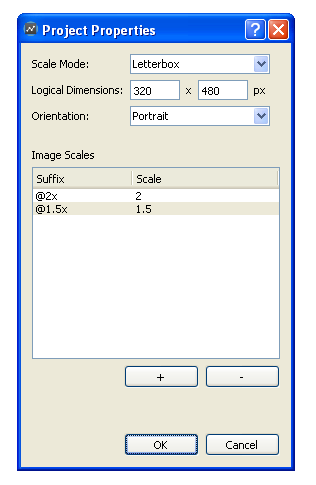
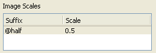

Automatic Image Resolution
With the introduction of iPad, iPhone 4 and variety of devices running Android, now there are multiple resolutions that game developers should consider. To efficiently use texture memory and processing power of GPUs, applications should use low-resolution images on devices with low-resolution screens and high-resolution images on devices with high-resolution screens. With the help of automatic image resolution, you can bundle both low and high resolution images together with your application and Gideros automatically selects the best resolution according to your scaling.
Automatic image resolution is directly related to automatic screen scaling. For example, if your screen is automatically scaled by 2, then using the double-sized image is the best choice in terms of quality and efficiency.
Open the project “Hardware/Automatic Image Resolution” to see automatic image resolution in action. Run this example multiple times by selecting different resolutions on Gideros Player such as 320x480, 640x960 and 480x800. As you can see, for the different resolutions, the original 200x200 image or high-resolution variants (300x300 and 400x400) are selected and displayed automatically.
Now right click on the project name and select “Properties…” to understand how we configure automatic image resolution parameters:

In this example, our logical dimensions are 320x480 and scale mode is Letterbox. So the scaling factor for a device with screen resolution 320x480 (older iPhones) is 1, scaling factor for 480x960 (iPhone 4) is 2 and scaling factor for 480x800 (Samsung Galaxy S) is around 1.5.
As you can see, we’ve configured image scales as:

So if you have a base image with resolution 200x200 with name “image.png”, you provide these 3 images:
- image.png (200x200)
- image@1.5x.png (300x300)
- image@2x.png (400x400)
and let Gideros pick the appropriate one.
Providing the alternative images (in our example, these are image@1.5x.png and image@2x.png) is optional but you should always provide the base image (image.png). When Gideros cannot find the alternative image to load, it loads the base image. Also size calculations are done according to the size of the base image.
Design for High Resolution Devices
In our example, we set the logical dimensions as 320x480 and provide higher-resolution alternative images. On the other hand, it’s possible to set logical dimensions as 480x960 or 768x1024 and provide lower-resolution images. In this case, we can configure the image scales like:

and provide alternative images with suffix “@half” as half-resolution of the original ones.
Bitmap Fonts and Texture Packs
Automatic image resolution works with bitmap fonts and texture packs also. Assume you create a bitmap font with size 20 and export it as “font.txt” + “font.png”. To obtain the double-resolution alternative, export the same font with size 40 as “font@2x.txt” + “font@2x.png”.
A texture pack is a large image which contains many smaller sub-images. There is one thing to remember while creating multi-resolution texture packs: the names of the sub-images must be same across the texture pack variants. A practical way to achieve this is to store different resolution sub-image sets into their own directories. You can check the sample “Hardware/Automatic Texture Pack Resolution” about this.